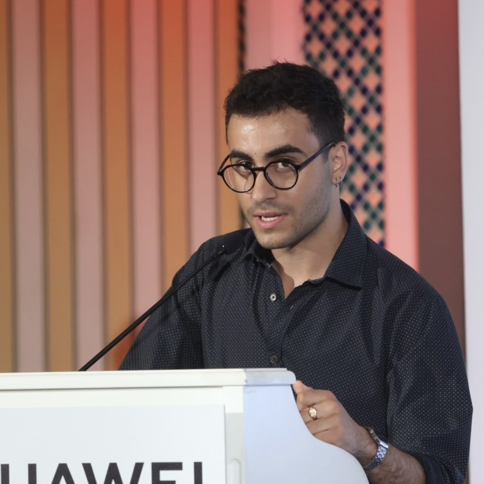

Ποιοί είμαστε
Εμείς, η ομάδα του 4mat, παλεύουμε καθημερινά για την προμήθευση των πελατών με τα καλύτερα και πιο καινούργια προϊόντα τεχνολογίας στις πιο ανταγωνιστικές τιμές της αγοράς. Γίνε και εσύ μέλος της ομάδας μας και απόλαυσε στο έπακρο τα οφέλη της τεχνολογίας!
Γιώργος Σύρος
Ο Γιώργος είναι τεταρτοετής φοιτητής του τμήματος Πληροφορικής του ΟΠΑ. Λατρεύει τα μαθηματικά μυθιστορήματα και τα κόμικ.
Νίκος Χριστοδούλου
Ο Νίκος είναι τεταρτοετής φοιτητής του τμήματος Πληροφορικής του ΟΠΑ. Λατρεύει τα ταξίδια και να παίζει κιθάρα.